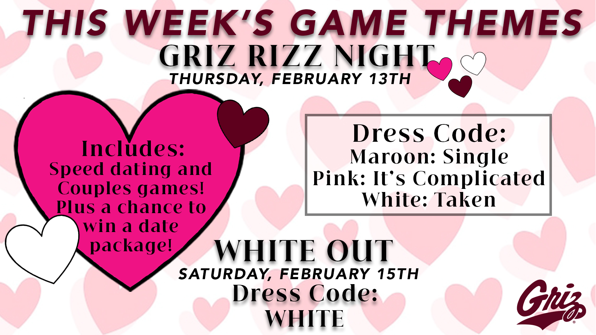

This paragraph has a class!



This website is dedicated to the work and expeience i had done with Grizzly athletics through being an intern and a Zoo Crew Leader, enjoy!About me: I am a marketing and media arts student at the University of Montana and am passionate about sports and live entertainment. Utilizing my passion in a business atmosphere, I have merged my interests. In the marketing world of sports and now shifting into the music world by working at the box office, I am gaining experience in the sports and entertainment industry. I intend to build a career in live entertainment that promotes the experience to fellow sports and live music enthusiasts.
Mission Statement: I do this work because I genuinely love the energy and emotion that sports and entertainment bring to people’s lives. There’s something special about helping fans feel more connected to the teams, stories, and moments they care about. For me, it’s not just marketing—it’s about creating memories, building community, and being part of something bigger than myself. Every project is a chance to turn passion into impact.
This paragraph has a class!